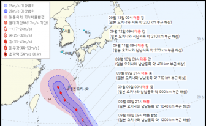

국가:
① 러시아아시아는 물론 유럽 대륙 중 일부를 차지할 정도로 세계에서 가장 영토 면적이 큰 국가이며 러시아의 아주 중요한 지리적 특징은 엄청나게 큰 영토이다.
② 우크라이나
우크라이나는 동유럽 국가다. 남쪽과 남동쪽으로는 흑해와 아조프해, 동쪽과 북동쪽으로는 러시아, 북쪽과 북서쪽으로는 벨라루스, 서쪽으로는 폴란드, 슬로바키아, 헝가리, 남서쪽으로는 루마니아, 몰도바와 접한다.

블라디미르 푸틴 러시아① 대통령이 지난 7월 유엔과 튀르키예의 중재로 맺은 우크라이나② 곡물 수출 협정에 허점이 있다며 다시 곡물 수출을 제한하겠다고 했다. 반면 우크라이나 측은 러시아가 곡물 수출협정을 재검토할 근거가 없다고 반박했다.
로이터통신에 따르면 푸틴 대통령은 7일(현지시간) 극동 블라디보스토크에서 열린 동방경제포럼 연설에서 우크라이나 항구를 떠난 87척의 배 가운데 오직 2척만이 최빈국으로 떠났다면서 나머지 곡물들은 거의 개도국이 아닌 유럽연합(EU) 국가들로 향했다고 주장했다.
그러면서 "(러시아와 개발도상국은) 속았다"고 말했다.
그는 서방이 식민지 국가들에나 할 법한 짓을 하고 있다고 비난하면서 "개도국들은 속았고, 계속 속아넘어가고 있다"며 "이런 접근법으로는 세계 식량 문제가 더 심해지기만 할 것이다. 이는 전례 없는 인도주의적 재앙으로 이어질 수 있다"고 비판했다.
푸틴 대통령은 우크라이나 곡물이 서방 국가들로 향하지 못하도록 선적을 받을 수 있는 국가들을 제한하기 위해 협정 조건을 개정하겠다고 밝혔다.
지난 7월22일 러시아와 우크라이나는 안토니우 구테흐스 유엔 사무총장과 레제프 타이이프 에르도안 튀르키예 대통령의 중재로 곡물 수출을 가능하도록 하는 협정을 맺었다.
협정은 아프리카 개도국의 식량 위기를 완화할 중요한 변곡점이라는 평가를 받았지만, 실제로 수혜를 본 건 개도국이 아닌 EU 국가들이었다는 게 푸틴 대통령의 주장이다. 푸틴 대통령은 "곡물 수입 국가들을 제한하는 방안을 논의하기 위해 에르도안 대통령과 접촉할 것"이라고 말했다.
미하일로 포돌랴크 우크라이나 대통령실 고문은 푸틴 대통령의 이런 발언에 "곡물 협정 내용을 개정할 객관적인 이유가 없다"고 반발했다.포돌랴크 고문은 협정 내용이 현재 엄격하게 지켜지고 있으며, 푸틴 대통령의 발언은 세계 여론에 영향을 미치고 유엔에 압력을 가해 좀 더 공격적인 대화 지점을 찾으려는 의도
라고 해석했다.
실제로 러시아는 협정 내용을 바꾸려는 시도조차 하지 않고 있다고 로이터는 전했다. 미콜라 솔스키 우크라이나 농업장관은 "나도 (푸틴의) 발언을 들었지만 러시아측은 어떤 움직임도 보이지 않고 있다"고 지적했다.
유엔도 곡물 수출협정 이후 식량 가격이 유의미하게 내려갔다며 푸틴 대통령의 주장에 반박했다.
로이터는 유엔 식량농업기구(FAO)의 8월 곡물가격지수가 전월대비 1.4% 하락했다며 우크라이나 흑해 항구의 곡물 수출이 재개된 게 일부 원인이 됐다고 전했다.
곡물이 실린 선박이 개발도상국에 2척밖에 가지 않았다는 푸틴 대통령의 주장에 대해 유엔은 실제 자료를 공개했다. 협정 이후 곡물이 실린 선박은 중국과 인도, 이집트, 예멘, 소말리아, 지부티 등 여러 나라로 향했다.
유엔 대변인은 "오늘까지 우리는 우크라이나 항구에서 100척의 선박이 233만4310톤의 곡물 등 식량을 세 대륙으로 수송한 것을 확인했고 이들 가운데 30%는 저소득국이나 중저소득 국가였다"고 설명했다.
| 1 | "접히면 알려줘"…아이폰14 선보인 날, 삼성의 도발 | |
| 2 | '힌남노' 가니 12호 태풍 '무이파' 온다…국내영향 여부 10일께 판단 |  |
| 1 | "접히면 알려줘"…아이폰14 선보인 날, 삼성의 도발 |